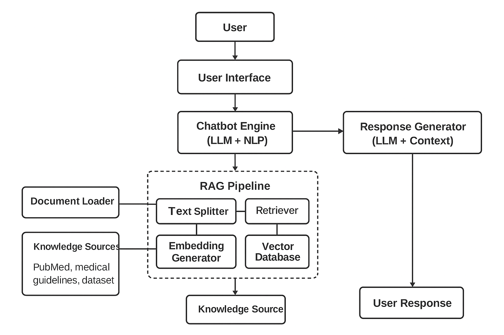
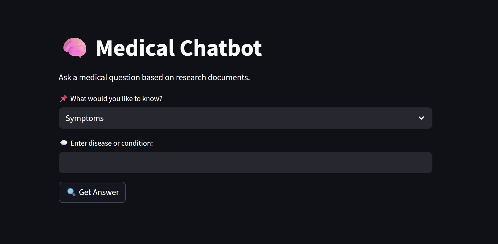

“Revolutionizing patient interaction with intelligent healthcare assistance.”
The AI-Powered Medical Chatbot is designed to bridge the gap between patients and healthcare services. Built using advanced NLP techniques, Retrieval-Augmented Generation (RAG), and modern deep learning models, this chatbot can understand patient queries, provide context-aware responses, and offer first-level medical guidance.
Unlike simple FAQ bots, this system integrates medical datasets, knowledge graphs, and real-time document retrieval to ensure responses are accurate, reliable, and tailored to the user’s condition.
code snippets, graphs, system architecture diagrams, and chatbot interface screenshots here to showcase the project visually.


This project demonstrates a unique blend of AI engineering, medical domain knowledge, and deployment expertise. From designing an intelligent conversation system to deploying a production-ready chatbot, it reflects practical problem-solving, advanced technical skills, and real-world applicability. As a recruiter, this project shows not only technical depth but also the ability to create solutions that impact society positively.
“When I see this project, I don’t just see code — I see innovation, dedication, and the mark of a future-ready AI engineer I’d want to hire.”